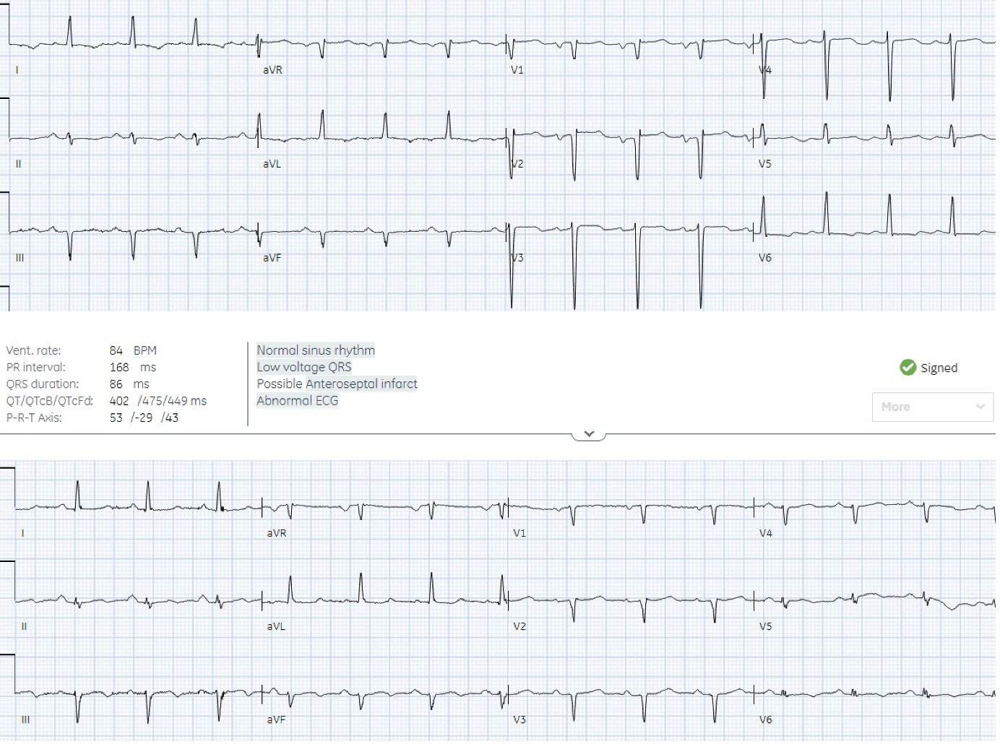
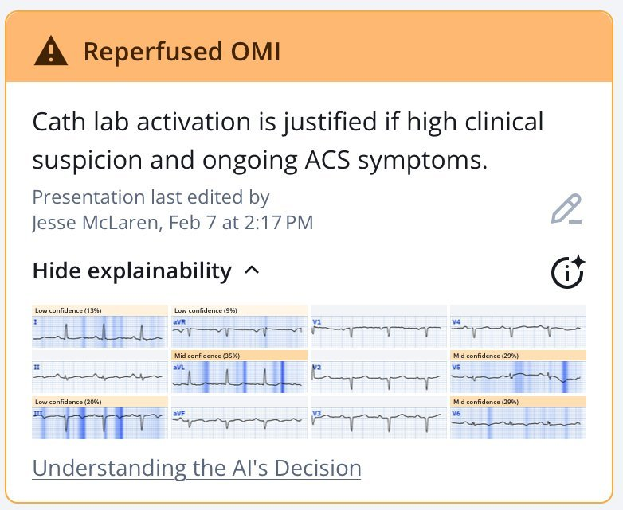
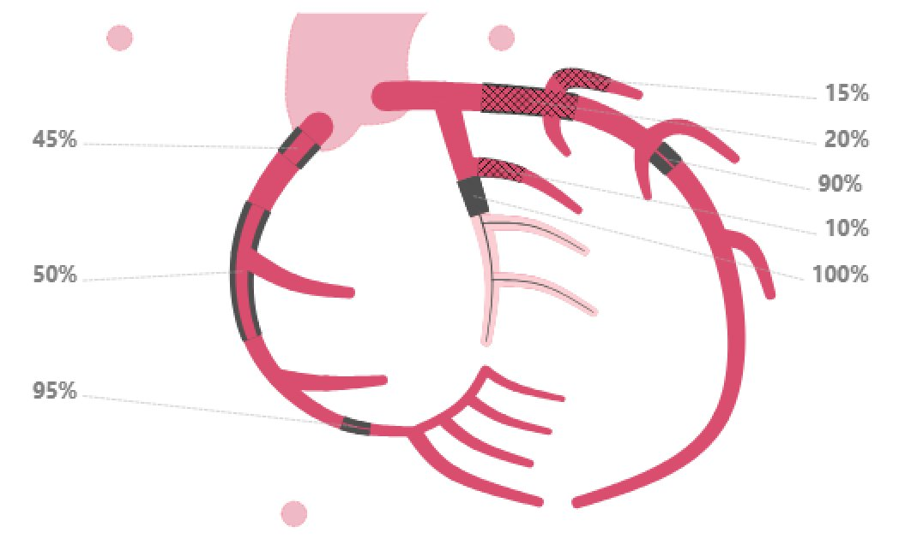
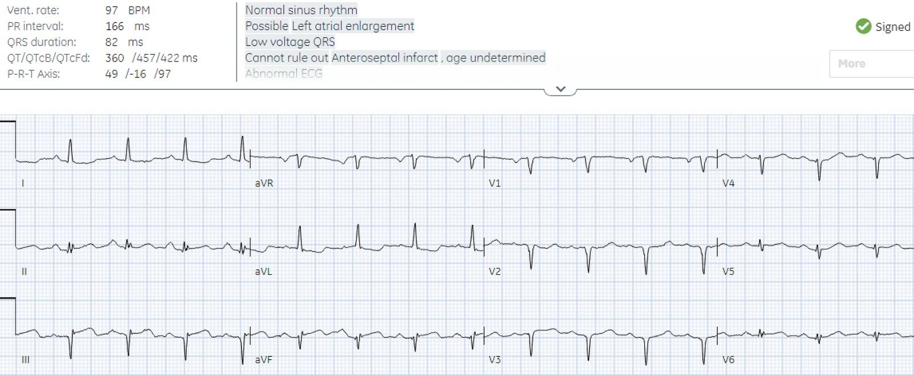
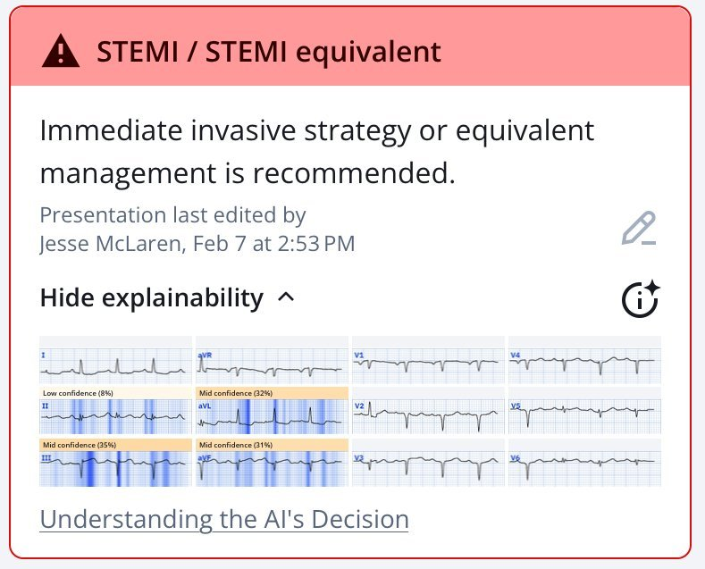
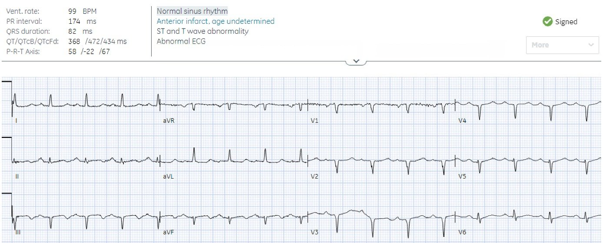
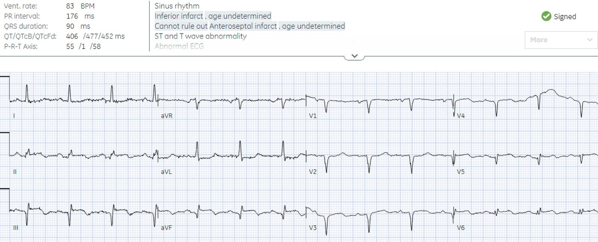
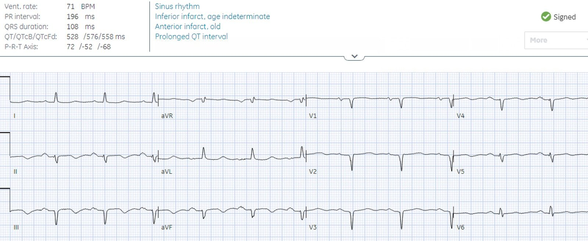
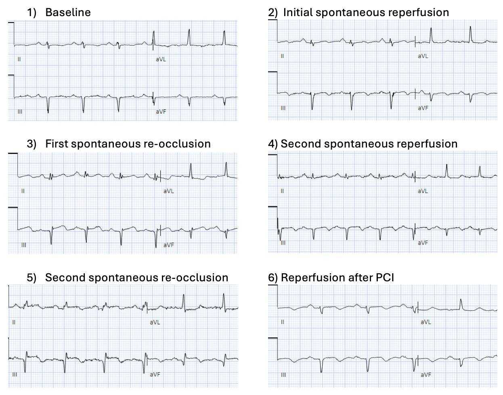
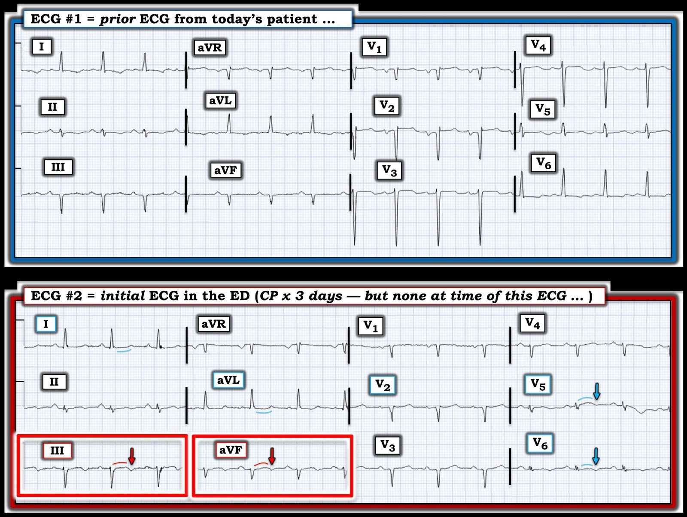

08/02/2025 — ‘NSTEMI’ hay OMI đã tái tưới máu? Và tổn thương nào là thủ phạm?
Bản dịch tiếng Việt của bài "‘NSTEMI’ or reperfused OMI? And which lesion is the culprit?" – Dr. Smith’s ECG Blog. Giữ nguyên toàn bộ 11 hình ảnh của bản gốc.
Tác giả: Jesse McLaren
Một bệnh nhân 80 tuổi
có tiền sử suy tim sung huyết (CHF), bệnh thận giai đoạn cuối (ESRD) đang lọc máu và đã đặt nhiều stent mạch vành trước đây, đến
khoa cấp cứu vì đau ngực từng cơn 3 ngày kèm
khó thở, đỡ sau khi dùng nitro, cảm giác giống các cơn
đau thắt ngực trước đây. Lúc đến viện bệnh nhân không đau ngực; dưới đây là điện tâm đồ cũ và
điện tâm đồ mới. Bạn nghĩ gì?
Điện tâm đồ cũ ở trên, điện tâm đồ mới ở dưới


Nhịp xoang
bình thường, dẫn truyền bình thường, trục lệch trái, tăng tiến sóng R kém và điện thế
thấp ở các chuyển đạo trước tim. So với điện tâm đồ cũ, có sóng T đảo ngược kín đáo ở thành
dưới và thành bên. Ở một bệnh nhân đã hết triệu chứng thiếu máu cục bộ, điều này
gợi ý tái tưới máu vùng dưới-bên, thường do RCA hoặc động mạch mũ trái.
Smith: Tôi xem điện tâm đồ phía dưới mà thậm chí chưa nhìn điện tâm đồ trước đó, và đã thấy hình thái kinh điển của tái tưới máu, đặc biệt ở chuyển đạo III, kèm ST chênh xuống soi gương và sóng T dương (tái tưới máu soi gương) ở aVL. Sau đó, khi so với điện tâm đồ cũ, sự thay đổi này giúp chẩn đoán xác định tái tưới máu thành dưới và thành bên.
‘NSTEMI’ hayOMI đã tái tưới máu?
Bác sĩ cấp cứu
đọc điện tâm đồ đơn giản là “NSR” (nhịp xoang bình thường). Khi kết quả hs-troponin I trả về 475
ng/L (so với mức nền là 60), bệnh nhân được chuyển tới khoa tim mạch với chẩn đoán “NSTEMI”.
Khoa tim mạch đọc là “trục lệch trái, sóng Q trước vách, tăng tiến sóng R
kém”, và bệnh nhân được nhập viện với chẩn đoán “NSTEMI”. Điều này ngụ ý một
nhồi máu cơ tim không do tắc, có thể an toàn chờ chụp mạch vành trì hoãn.
Nhưng ngay cả khi không
so sánh với điện tâm đồ cũ, Queen of Hearts vẫn nhận định điện tâm đồ này cho thấy
OMI đã tái tưới máu, có nguy cơ tắc lại:


Smith: Bạn có thể thấy Queen of Hearts nhìn chuyển đạo III và aVL đúng như cách tôi đã nhìn.
Tổn thương nào là thủ phạm?
Ngày hôm sau
bệnh nhân được đưa vào phòng thông tim, tại đây bác sĩ tim mạch can thiệp ghi nhận: “Điện tâm đồ
không cho thấy bất kỳ thay đổi thiếu máu cục bộ cấp nào. Dường như có sóng Q ở cả
chuyển đạo thành dưới và thành trước. Xem lại các điện tâm đồ cũ của ông ấy cũng không có
thay đổi đáng kể nào so với trước.” Chụp mạch vành cho thấy tắc hoàn toàn mạn tính
động mạch mũ, nhiều stent còn thông, và hai chỗ hẹp: hẹp 95% RCA đoạn xa và
90% LAD đoạn giữa.


Vậy đâu là
thủ phạm? Như báo cáo thông tim ghi nhận, “Đáng tiếc là mạch thủ phạm
không rõ ràng do ông ấy bị bệnh mạch vành lan tỏa. Có
thể LAD hoặc RCA góp phần gây ra biểu hiện hiện tại. Tôi nghĩ rằng
tổn thương RCA cũng là mạn tính. Đáng tiếc là điện tâm đồ của ông ấy không giúp ích gì vì
có bằng chứng sóng Q ở thành trước cũng như sóng Q ở thành dưới trên một số
điện tâm đồ trước đây. Chúng tôi thống nhất rằng tái thông mạch LAD là hợp lý.”
Nói cách khác,
vì tình trạng tái tưới máu kín đáo ở thành dưới không được nhận ra nên RCA thủ phạm đã không
được đặt stent. Trong vài ngày sau đó, bệnh nhân tiếp tục có những cơn
đau ngực từng lúc.
Vài giờ
sau chụp mạch vành, bệnh nhân xuất hiện đau ngực:


Lúc này, các sóng T thành dưới-sau vốn
đảo ngược trước đó đã dương trở lại (giả bình thường hóa), và có
ST chênh xuống soi gương ở aVL, dấu hiệu rất đặc hiệu cho OMI thành dưới. Bệnh
nhân đã tắc lại một cách tự phát.
Queen of Hearts
nhận định đây là tắc động mạch vành cấp:


Cơn đau ngực hết
sau khi dùng nitro và điện tâm đồ không được ghi lại.
Ngày hôm sau,
bệnh nhân có thêm một cơn đau, tự hết trước khi được thăm khám:


Lại tái tưới máu
Ngày tiếp
theo, bệnh nhân lại có một cơn đau ngực:


Lại tắc tự phát
một lần nữa. Điện tâm đồ này được đọc là “STEMI thành dưới” và phòng thông tim được kích hoạt. Lúc
chụp mạch vành, RCA lại đang thông với mức hẹp 95%, và được đặt stent. Troponin
tăng từ 380 ng/L lên 930 ng/L trước khi thông tim, nhưng không được xét nghiệm lại sau đó. Bệnh nhân
không còn cơn đau ngực nào nữa.
Điện tâm đồ ngày
hôm sau cho thấy tái tưới máu.


Chẩn đoán
ra viện là ‘Non-STEMI’.
Dưới đây là
các điện tâm đồ một lần nữa, tập trung vào các chuyển đạo thành dưới và thay đổi soi gương ở aVL:


Điều cần nhớ
1.
Cụm từ “gom tất cả” ‘NSTEMI’
không phân biệt được các bệnh lý khác nhau với cách xử trí khác nhau dựa trên tình trạng của động mạch vành:
nhồi máu cơ tim không do tắc (thông tim không khẩn), nhồi máu cơ tim do tắc kín đáo (thông tim cấp cứu), và
tắc đã tái tưới máu có nguy cơ tắc lại (thông tim khẩn)
2.
Sự phân đôi STEMI/NSTEMI có thể
gây khó khăn cho việc xác định tổn thương thủ phạm, vốn có thể đã tái tưới máu tự phát
vào thời điểm chụp mạch vành
3.
Sóng T là dấu hiệu rất đặc hiệu cho quá trình động của tái tưới máu/tắc lại tự phát
4.
Queen of Hearts có thể phân biệt
OMI đã tái tưới máu kín đáo với NOMI, và giúp định hướng quyết định thông tim
5. Tổn thương cơ tim đáng kể thêm lẽ ra đã có thể tránh được bằng cách đặt stent RCA ngay ở lần thông tim đầu tiên, nhưng điều này chỉ khả thi khi đọc điện tâm đồ chính xác, hoặc khi sử dụng Queen of Hearts.

===================================
BÌNH LUẬN CỦA TÔI, bởi KEN GRAUER, MD (8/2/2025):
===================================
Ca bệnh quan trọng được Bác sĩ McLaren trình bày hôm nay — vì ca này làm nổi bật những cách đọc sai và quan niệm sai lầm vẫn còn quá phổ biến trong thực hành hằng ngày.
- Để thuận tiện so sánh trong Hình 1 — tôi đã đặt lại điện tâm đồ trước đây (nền) của bệnh nhân hôm nay — cùng với điện tâm đồ đầu tiên ghi tại khoa cấp cứu.
Những băn khoăn của tôi Về Ca bệnh NÀY:
- Bệnh sử đã bị bỏ qua: Bệnh nhân hôm nay 80 tuổi, có bệnh mạch vành đã biết — đến viện vì đau ngực từng cơn 3 ngày (CP, Chest Pain) — nhưng không còn đau ngực lúc đến. Ẩn trong bệnh sử này là 3 lý do để bác sĩ cấp cứu nghi ngờ rằng bất kỳ bất thường điện tâm đồ nào có thể thấy được đều có thể kín đáo: i) Bệnh nhân lớn tuổi, có tiền sử đặt nhiều stent — do đó rất có khả năng có bệnh tim nền đáng kể (có lẽ là bệnh nhiều nhánh mạch vành) — với khả năng có tuần hoàn bàng hệ đáng kể, có thể làm giảm mức độ rõ rệt của các thay đổi mới; ii) Cơn đau ngực của bệnh nhân diễn ra từng cơn — do đó các thay đổi điện tâm đồ mới có thể đang ở trạng thái chuyển tiếp (tức là giả bình thường hóa) giữa giai đoạn ST chênh lên và giai đoạn ST chênh xuống/sóng T đảo ngược do tái tưới máu; và, iii) Cơn đau ngực của bệnh nhân đã hết vào lúc ghi điện tâm đồ đầu tiên (điều này thường làm giảm đáng kể, nếu không nói là làm mất hẳn, các thay đổi ST-T).
- Cho rằng Troponin tăng là do NSTEMI: Sự kết hợp giữa bệnh sử đau ngực + bất thường ST-T phù hợp với thay đổi do tái tưới máu (đặc biệt khi so với một bản ghi trước đây không có những thay đổi này) + Troponin tăng đáng kể — là chẩn đoán xác định OMI. Như Bác sĩ McLaren đã nêu — chẩn đoán nhầm ca hôm nay là “NSTEMI” chỉ làm trì hoãn việc thông tim cần thiết (với cái giá tiềm tàng là mất thêm cơ tim).
- Các dấu hiệu điện tâm đồ then chốt trong Hình 1 đã bị bỏ sót: — i) Những chuyển đạo nào trong điện tâm đồ #1 bị đặt sai vị trí? — và, ii) Những dấu hiệu mới quan trọng nào được phát hiện khi so sánh từng chuyển đạo một giữa điện tâm đồ #1 và điện tâm đồ #2?


Các dấu hiệu điện tâm đồ THEN CHỐT trong Hình 1 đã bị bỏ sót:
Chính vì bệnh sử trong ca hôm nay gợi ý mạnh mẽ rằng bệnh nhân 80 tuổi này, với đau ngực từng cơn 3 ngày nay đã hết, có thể chỉ biểu hiện những bất thường điện tâm đồ kín đáo — nên việc so sánh từng chuyển đạo một giữa điện tâm đồ #1 và điện tâm đồ #2 mới quan trọng đến vậy. Nếu không dùng kỹ thuật đơn giản là so sánh từng chuyển đạo một này — sẽ trở nên quá dễ dàng bỏ sót những khác biệt thật sự nhưng kín đáo giữa 2 bản ghi.
- Khi so sánh điện tâm đồ #1 và điện tâm đồ #2 cần lưu ý rằng điện cực chuyển đạo V1 và V2 đã bị đặt quá cao trên ngực trong điện tâm đồ #1. Chúng ta có thể nhận ra ngay điều này vì: i) Thành phần âm của sóng P ở cả hai chuyển đạo này sâu đến vậy; — ii) Có sóng r’ tận ở cả V1 và V2; — và, iii) Các phức bộ PQRST ở chuyển đạo V1,V2 trông rất giống phức bộ PQRST ở chuyển đạo aVR (Xem Bình luận của tôi trong bài đăng ngày 4 tháng Mười Một năm 2018 , cùng nhiều bài khác).
- Chuyển sự chú ý sang điện tâm đồ #2 — “mắt” tôi lập tức bị thu hút vào 2 chuyển đạo nằm trong các hình chữ nhật ĐỎ ( = chuyển đạo III và aVF) — vì các chuyển đạo này cho thấy: i) ST dạng vòm (coving) bất thường, kèm gợi ý ST chênh lên nhẹ; — ii) Phần cuối sóng T đảo ngược, điều mà khi đi kèm ST dạng vòm với ST chênh lên không quá mức tối thiểu — gợi ý có một mức độ tái tưới máu tự phát; — iii) Đoạn ST “võng lõm” (scooping) kín đáo ở các chuyển đạo bên cao I và aVL — phù hợp với thay đổi ST-T soi gương kín đáo; — và, iv) Sự vắng mặt của các thay đổi ST-T này ở 4 chuyển đạo đó trên bản ghi trước đây!
- Nhìn vào các chuyển đạo trước tim ở điện tâm đồ #2 — ST dạng vòm kín đáo-nhưng-có-thật tương tự cũng xuất hiện, như đã thấy ở chuyển đạo III,aVF — ở đây kèm gợi ý ST chênh lên ở chuyển đạo V5 — với phần cuối sóng T đảo ngược ở chuyển đạo V5,V6. Điều này gợi ý OMI thành bên mới xảy ra, nay có gợi ý một mức độ tái tưới máu tự phát.
- Biết rằng OMI dưới-bên rất thường đi kèm tổn thương thành sau — tôi diễn giải việc thiếu kín đáo đoạn ST chênh lên dốc lên nhẹ nhàng ở chuyển đạo V2 là phù hợp với bức tranh chung của OMI dưới-sau-bên mới xảy ra, nhiều khả năng kèm một mức độ giả bình thường hóa và sự khởi đầu của sóng T tái tưới máu.
ĐIỀU CỐT LÕI: Bệnh sử trong ca hôm nay cảnh báo người thầy thuốc hiểu biết về loại dấu hiệu điện tâm đồ kín đáo cần phải tìm.
- Việc phát hiện Troponin ban đầu tăng đáng kể ( = 475 ng/L) khẳng định chẩn đoán tắc động mạch vành mới xảy ra (và/hoặc đang diễn ra) ( = một OMI) — cho đến khi chứng minh được điều ngược lại. Gọi đây là “NSTEMI” — là trì hoãn việc thông tim cần thiết và cơ hội cứu vớt cơ tim còn sống.
- Các dấu hiệu trên điện tâm đồ đầu tiên là kín đáo. Nhưng NẾU người thầy thuốc hiểu biết đánh giá bản ghi đầu tiên này bằng cách so sánh từng chuyển đạo một với điện tâm đồ cũ — sẽ thấy thay đổi ST-T rõ ràng ở ít nhất 6/10 chuyển đạo (trong đó việc so sánh chuyển đạo V1,V2 giữa 2 bản ghi này không còn giá trị do các chuyển đạo này bị đặt quá cao ở điện tâm đồ #1).